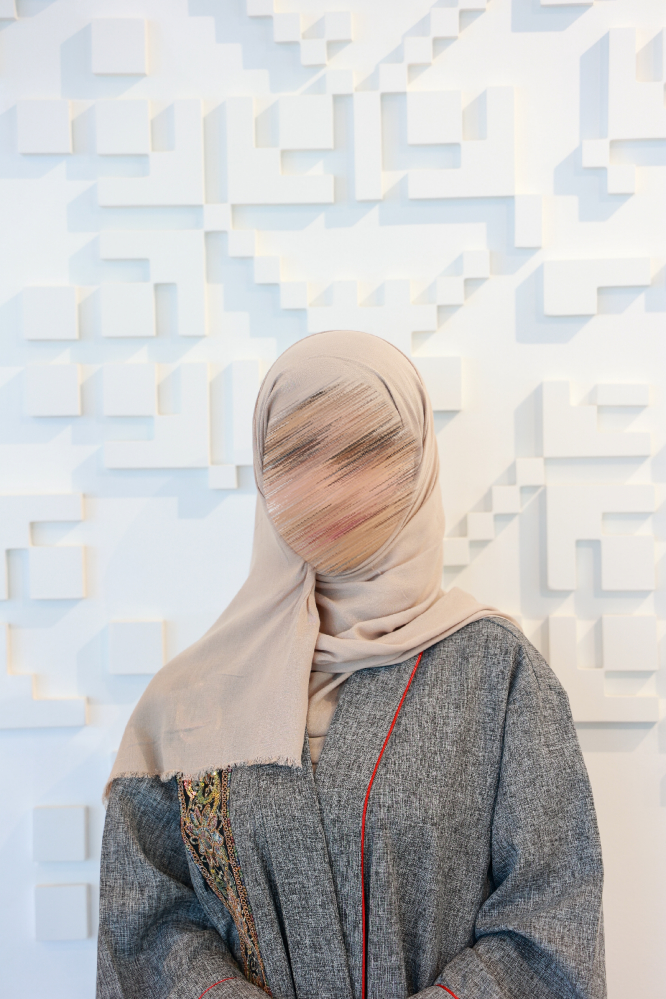

Applied AI & ML Engineer specializing in Agentic RAG and Knowledge Graphs. I am currently architecting an AI framework for proactive customer retention, transforming user feedback into strategic growth. I build high-performance, user-centric AI tools that deliver measurable business impact.
Advanced Agentic RAG system featuring Hybrid Search, Adaptive Routing, and a comprehensive evaluation suite (Recall@k, MRR).
An intelligent support agent with Graph-Augmented Retrieval (Neo4j) and Tool-use (Action requests) capabilities. Features real-time escalation via Slack and session memory via Redis.
Implemented a production-grade observability stack for a RAG backend. Features Prometheus metrics (latency histograms, request counters), structured JSON logging, and a RAG smoke evaluator to verify citation grounding and system health.